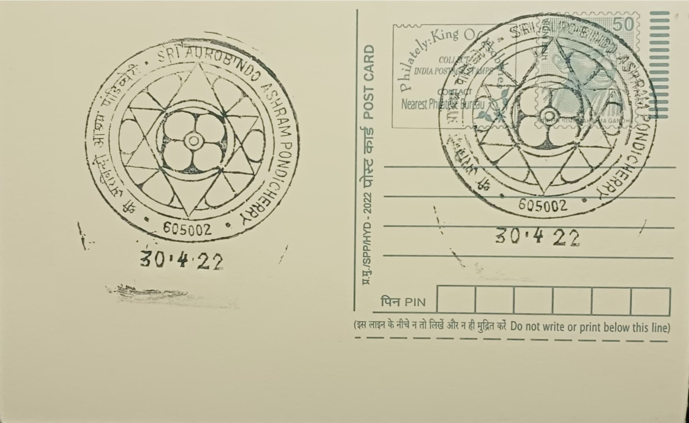
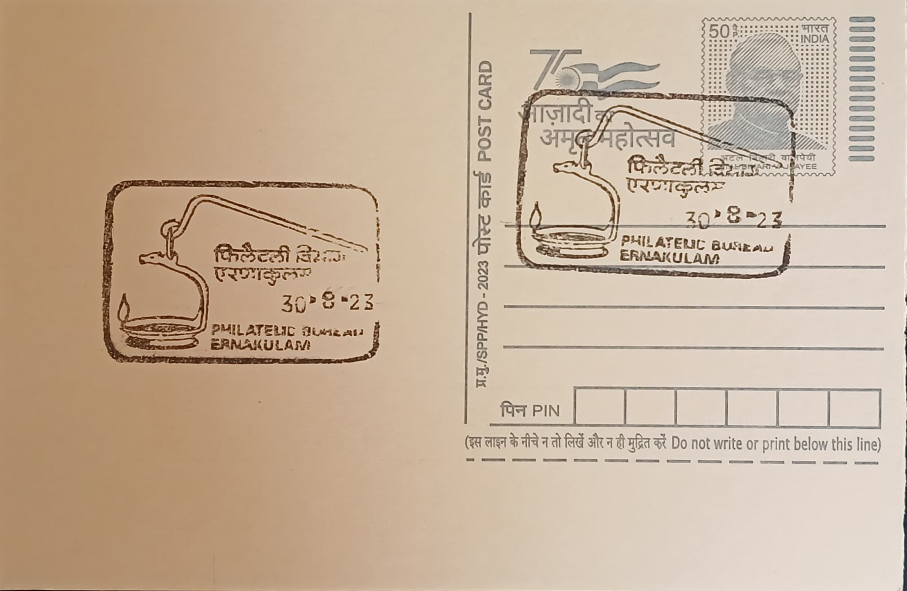
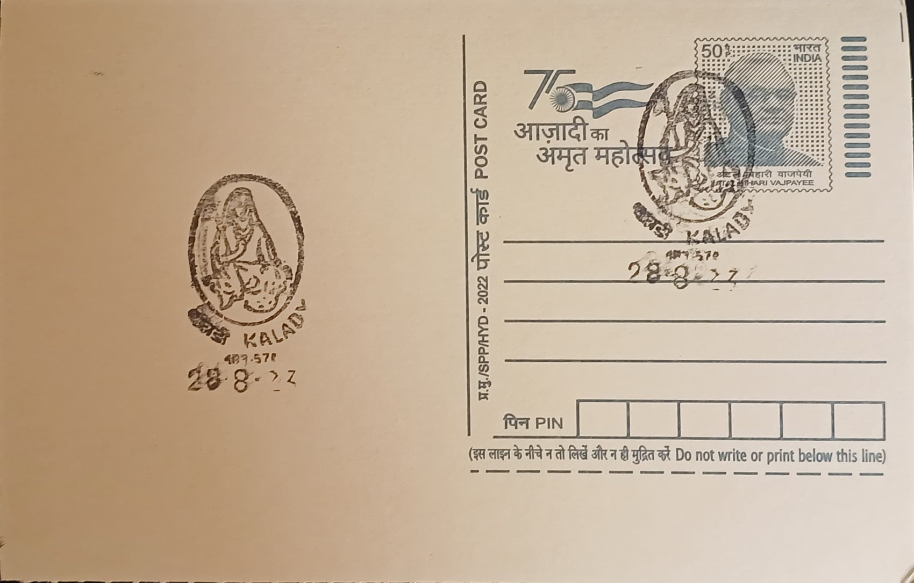

{kind=link}


{kind=link}
{kind=link}


This list below have 4 categories. Green represents AVAILABLE, Blue/^ represents DOUBTFUL, Orange/% represents REPLACED, and Red/* represents UNAVAILABLE.
| S. NO. | PERMANENT PICTORIAL CANCELLATION | DATE OF INTRODUCTION | POST OFFICE AND RANK | DISTRICT | STATE/UT | PINCODE | IMAGE |
|---|---|---|---|---|---|---|---|
| 1 | Logo of Sri Aurobindo Ashram and The Mother | 15.08.2013 | Sri Aurobindo Ashram SO | Puducherry | PUDUCHERRY | 605002 |  |
| 2 | Face of Theyyam | 10.11.2016 | Kannur HO | Kannur | KERALA | 670001 | |
| 3 | Heron | 05.06.2005 | Kadalundi SO | Kannur | KERALA | 670302 | |
| 4 | Muzhappilangad Beach | 03.08.2006 | Muzhappilangad SO | Kannur | KERALA | 670662 | |
| 5 | Madhur Ananteshwara Vinayaka Temple | 14.12.2015 | Madhur BO | Kannur | KERALA | 671124 | |
| 6 | Bekal Fort | 23.02.1983 | Pallikkara SO | Kannur | KERALA | 671316 | |
| 7 | Mask of Theyyam | 22.01.2003 | Kozhikode (Calicut) HO | Malappuram | KERALA | 673001 | |
| 8 | Uru or Fat Boat | 17.05.2006 | Beypore SO | Kozhikode | KERALA | 673015 | |
| 9 | Thunchath Ramanujam Ezhuthachan | 17.06.1999 | Tirur SO | Palakkad | KERALA | 676101 | |
| 10 | Mamankam | 15.02.2010 | Tirunavaya SO | Palakkad | KERALA | 676301 | |
| 11 | Vaidyaratnam P. S. Warrier * | 30.01.2018 | Kottakkal SO | Palakkad | KERALA | 676503 | |
| 12 | Kalpathi Rathotsavam | 22.08.2003 | Kalpathi SO | Thrissur | KERALA | 678003 | |
| 13 | Chembai Vaidyanatha Bhagavathar | 24.05.2005 | Kottayi SO | Thrissur | KERALA | 678572 | |
| 14 | Lion Tailed Macaque | 31.10.1992 | Agali SO | Thrissur | KERALA | 678581 | |
| 15 | Malampuzha Dam and Rope Car | 22.08.2005 | Malampuzha Dam SO | Thrissur | KERALA | 678651 | |
| 16 | Indian Bison (Gaur) | 31.10.1992 | Parambikulam SO | Thrissur | KERALA | 678661 | |
| 17 | Head Gear of Ottanthullal | 15.10.1997 | Lakkidi SO | Thrissur | KERALA | 679301 | |
| 18 | Vesham in Kathakali * | 09.11.1998 | Cheruthuruthy SO | Palakkad | KERALA | 679531 | |
| 19 | Thrissur Pooram Festival Elephant | 15.09.1995 | Thrissur HO | Thrissur | KERALA | 680001 | |
| 20 | Bell and Flag Mast in Guruvayur Sri Krishna Temple | 12.11.1988 | Guruvayur SO | Thrissur | KERALA | 680101 | |
| 21 | Shrine of St. Joseph Church | 13.05.1996 | Pavaratti SO | Thrissur | KERALA | 680507 | |
| 22 | Shrine of Our Lady of Perpetual Help | 14.04.2007 | Mattom SO | Thrissur | KERALA | 680602 | |
| 23 | Lighted Candles in Holy Cross Church, Mapranam | 14.09.2009 | Madayikonam SO | Thrissur | KERALA | 680712 | |
| 24 | Chinese Fishing Net | 21.08.1998 | Kochi HO | Ernakulam | KERALA | 682001 | |
| 25 | Magen David of Cochin Synagogue | 09.03.1982 | Mattancherry Jetty SO | Ernakulam | KERALA | 682002 | |
| 26 | Thookkuvilakku | 16.06.1978 | Ernakulam HO-PB | Ernakulam | KERALA | 682011 |  |
| 27 | Adi Sankaracharya | 16.12.1987 | Kalady SO | Alappuzha | KERALA | 683574 |  |
| 28 | St. Thomas Church | 14.11.1992 | Malayattoor SO | Alappuzha | KERALA | 683587 | |
| 29 | Thekkady Wildlife-Asian Elephant | 11.10.1975 | Kumily SO | Idukki | KERALA | 685509 | |
| 30 | Nilgiri Tahr | 11.09.1998 | Munnar SO | Idukki | KERALA | 685612 | |
| 31 | Saint Alphonsa | 19.07.1996 | Bharananganam BO | Kottayam | KERALA | 686578 | |
| 32 | Alappuzha Boat Race | 11.08.1984 | Alappuzha HO | Alappuzha | KERALA | 688001 | |
| 33 | Aranmula Boat Race | 31.10.1992 | Aranmula SO | Pathanamthitta | KERALA | 689533 | |
| 34 | Pathinettampadi (Holy Eighteen Steps) | 16.11.1974 | Sabarimala SO | Pathanamthitta | KERALA | 689713 | |
| 35 | Logo of Mata Amritanandamayi Math | 22.11.2019 | Amrithapuri SO | Kollam | KERALA | 690546 | |
| 36 | Face Mask of Kathakali | 01.01.1979 | Thiruvananthapuram GPO-PB | Thiruvananthapuram | KERALA | 695001 | |
| 37 | Rocket and Coconut Tree | 19.04.1977 | Thiruvananthapuram ISRO SO | Thiruvananthapuram | KERALA | 695022 | |
| 38 | Statue of Sri Narayana Guru | 31.10.1992 | Varkala SO | Thiruvananthapuram | KERALA | 695141 | |
| 39 | Beach, Coconut Trees, and Waves | 31.10.1992 | Kovalam BO | Thiruvananthapuram | KERALA | 695527 | |
| 40 | Ponmudi Hill Resort | 31.10.1992 | Ponmudi BO | Thiruvananthapuram | KERALA | 695551 | |